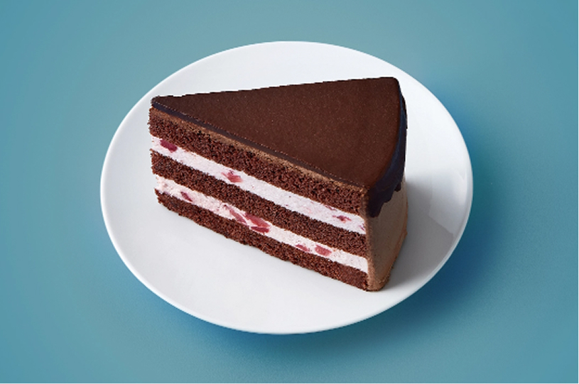
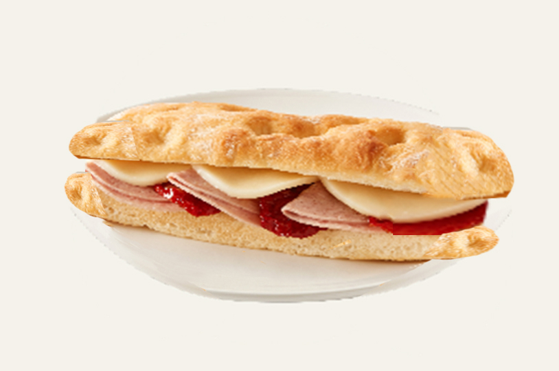
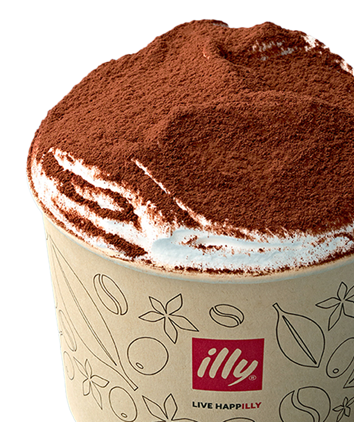

ILLY CAFFÈ
ILLY CAFE: PERFECT ESPRESSO
9가지 아라비카 원두를 블랜딩한 일리의 균형있고 완벽한 에스프레소
일리카페(illy Caffè)에서는 완벽한 맛을 자랑하는 일리 에스프레소 커피와 음식, 전통적인 카페 문화에 대한 종합적인 경험을 만날 수 있습니다. 아름다운 것과 완벽한 것의 가치를 추구할 뿐만 아니라 문화, 기술, 경험, 그리고 완벽함 까지 갖춘 글로벌 프랜차이즈 체인 일리카페(illy Caffè)는 전 세계 34개국의 주요 도시에서, 맛과 스타일, 예술적 탁월함을 경험하고자 하는 커피 애호가들로 부터 사랑받고 있습니다.
PERFECT ESPRESSO
-
- ESPRESSO
- 9가지 아라비카 원두를 블랜딩한 일리의 균형있고 완벽한 에스프레소
-
- CAPPUCCINO VIENNESE
- 벨벳거품, 휘핑크림, 초콜릿 가루가 조화된 음료
-
- ILLY SPECIAL
- 일리만의 특색있는 커피 음료
-
- SEASONAL
- 트렌드를 반영한 시즌 음료
-
- BEVERAGE
- 일리카페의 논알콜 음료
-
- CLASSIC
- 프리미엄 원두의 클래식 메뉴
CLASSIC CAKE & CASUAL MEAL
-
- BAKERY
- 매일 아침 신선하게 베이킹
-
- CAKE
- 시즌 케이크
-
- COOKIE
- 다양한 쿠키
-

- MINI
- 마카롱 및 마들렌
-

- SANDWICH
- 직접 제조하는 샌드위치
PROMOTION & GRAND OPEN
-

- ILLYMISU
- 부드럽고 진한 마스카포네 치즈와 일리 커피의 맛과 향을 담은 이탈리아 정통 티라미수를 일리카페에서 만나보세요
-
- VANILLATIC AUTUMN
- 바닐라향으로 물든 가을의 향이 듬뿍 담긴 일리카페 어텀 에디션
-
- Au Soleil with ILLY
- “따스한 태양 아래”를 의미하는 ‘오솔레일’을 모티브로 클래식 빙수부터 아포가토를 재해석한 빙수까지 총 3종류의 빙수를 선보이는 여름 시즌 한정 프로모션